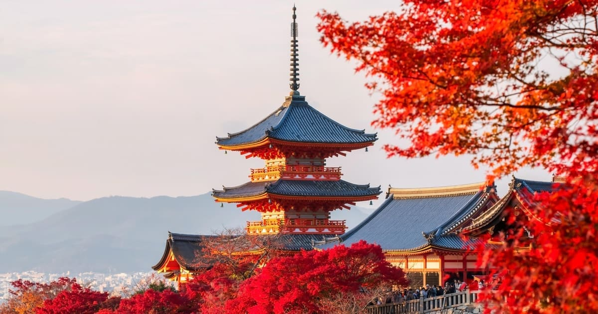
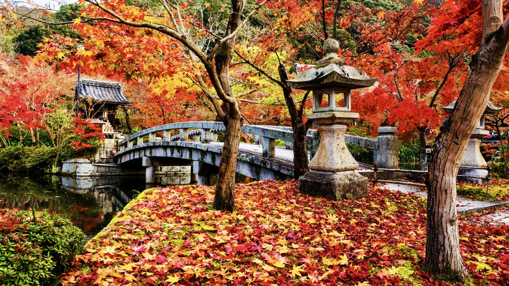

京都の紅葉
赤や黄色に染まる、美しい京都の秋。
紅葉の見どころ
京都の秋は、紅葉がとても美しい季節です。 山やお寺、庭園など、さまざまな場所で 赤や黄色に染まった木々を見ることができます。
紅葉の季節には、多くの人が京都を訪れます。 美しい景色を眺めながら、ゆっくり散歩するのもおすすめです。
お寺と紅葉
京都には、紅葉と歴史ある建物を一緒に楽しめる お寺や庭園がたくさんあります。
清水寺や東福寺などは、秋の景色で知られる場所です。 昼間の紅葉はもちろん、特別な夜間ライトアップも魅力です。

秋の散歩を楽しもう
紅葉を楽しむときは、歩きやすい靴を用意して、 時間に余裕を持って出かけましょう。
自分のお気に入りの景色を見つけて、 京都の秋の思い出を作ってみませんか。
